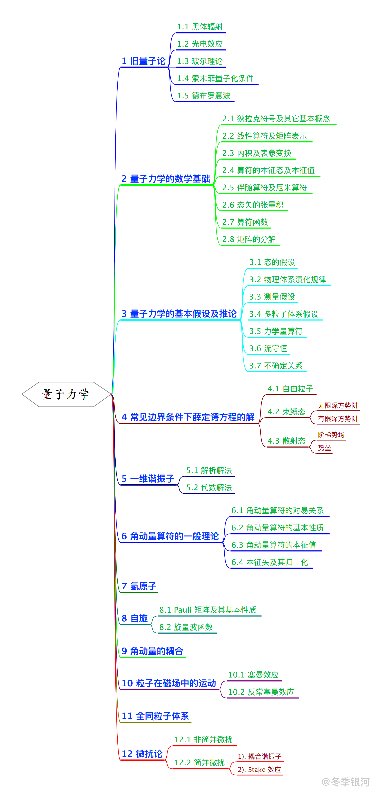

量子力学复习概要
最后更新：2021.11.09, 10:41
本文主要回顾了本科期间量子力学课上学到的东西. 此篇文章写于去年为理论所夏令营面试做准备期间, 最早发布于知乎, 原标题为 两个月速成 (误) 物理学本科高年级课程之量子力学篇: 总纲
(原) 序言
虽然说是速成, 但其实是复习, 希望不要被标题误导了… 因为研究生想做引力方面理论研究, 所以在两个月左右之后大概会去参加理论所的夏令营. 复习的内容主要是四大力学, 基本的广义相对论以及群论, 还有时间的话可能会写一点傅里叶光学和数理方法方面的东西. 虽然内容确实不少, 但想想去年电动力学考试的时候也才花了三天的时间复习, 两个月复习完这些也是有可能的吧? 果然 deadline 才是第一生产力 😂
由于写这个系列的目的是为了复习, 大部分内容都是按照自己的理解来写的, 难免有所纰漏. 如认为内容存在任何问题, 欢迎在评论区提出.

总的来说, 量子力学有两种讲法. 一种是利用波函数来讲, 其优势在于计算某些势场 (如方势阱) 时会比较方便, 较为典型的有曾谨言的量子力学教材. 另一种是从线性代数的角度来讲, 广泛运用狄拉克符号, 坐标表象下的波函数在这种语言中, 相当于所讨论的态在坐标本征态下的分量, 较为典型的有科恩的量子力学教材. 后一种讲法的优点在于, 抽象程度更高, 能清晰地看到量子力学的代数结构, 在讨论本征值时更方便, 且对于今后学习量子计算很有帮助. 在这个系列的量子力学部分, 着重从线性代数的角度来讲, 这部分内容的参考教材包括科恩的量子力学教材, 以及 Nielsen 的量子信息教材.
按照惯例, 在正式进入量子力学之前, 会介绍一点旧量子论的东西. 主要的内容包括黑体辐射, 光电效应, 玻尔理论, 索末菲量子化条件, 德布罗意波. 由于大部分内容在原子物理中已经学过, 所以不展开讨论旧量子论的内容.
数学基础主要是拓展的线性代数. 在正常的线性代数教学中, 主要是学的具体矩阵运算, 且几乎都只在实数域上讨论. 但在量子力学中, 关心的是算符, 矩阵知识一种计算手段, 且讨论的数域拓展到复数域. 另一方面, 还需要了解希尔伯特空间的基本概念. 不严谨地说, 希尔伯特空间就是一个定义了内积的复线性空间 (当然还有其它要求), 一般要求内积具有厄米性. 而一旦定义了内积, 就可以由内积衍生出希尔伯特空间的对偶空间, 进而衍生出算符的对偶算符和伴随算符等概念. 其中, 算符 $A$ 作用于态矢 $| \phi \rangle$ 后得到的矢量 $A | \phi \rangle$, 其在对偶空间中的对应量为 $\langle \phi | A^\dag$. 在量子力学的符号系统里面, 用右矢表示希尔伯特空间的矢量, 用左矢表示其对偶矢量. 有了基本概念之后, 就可以开始讨论算符的幺正性, 厄米性等性质. 值得一提的是, 算符的本征值以及不变子空间等概念也是相当重要的.
有了基本的数学基础后, 就可以正式开始量子力学的学习了. 首先是量子力学的基本假设: 态的假设, 物理体系演化规律的假设, 测量假设, 多粒子体系假设.
态假设认为, 单粒子的每一个状态, 都对应于希尔伯特空间中的一个射线 (之所以说是射线, 由于概率诠释, 最终都要做归一化, 所态矢的模意义不大).
物理体系演化规律假设有两种叙述方法: 一种认为态的演化可以用厄米算符来描述 (实质是概率守恒), 另一种是认为态的演化遵循薛定谔方程. 但只要由薛定谔方程出发, 提取出时间演化算符, 就可看到这两种表述的统一性.
测量假设则描述了测量这个过程. 在这个假设中, 每一个力学量对应一个幺正算符, 测量结果只能是该算符的本征值, 且测量后会坍缩到对应的某个本征态, 相应的概率是将波函数在正交归一的本征态下做展开时对应的展开系数.
最后的假设是多粒子体系波函数的假设. 简单来说, 其认为多粒子体系的态矢可以由原本的诸粒子态矢的各个直积的线性组合构成.
一般来说, 除了态矢描述以外, 还可采用密度矩阵 (可以视为经典统计中态的概率分布函数在量子力学中的推广) 描述, 其四条假设都可以用密度矩阵等效的来表示. 特别是在量子统计中, 密度矩阵扮演着及其重要的地位.
在有了基本的假设之后, 就是解一些具体的薛定谔方程了.
第一部分是方势阱 (包括束缚态及散射态) 及自由粒子. 考虑到势场的分布特性, 这类问题适合用波函数来讨论.
第二个部分是一维谐振子, 解法大致可分为代数解法和解析解法. 解析解法就是直接求解谐振子势下的薛定谔方程, 其中会用到厄米多项式等特殊函数, 总的来说计算较为繁琐, 且先得到本征函数后才考虑能级. 另一种是代数解法, 其先构造出产生湮灭算符, 及数算符, 再结合数算符的正定性以及产生湮灭算符作用到态上的特性直接给出本征值谱, 计算上更加简洁. 总的来说, 谐振子是相当重要和基本的一个模型, 在固体物理中, 将会由谐振子导出声子的概念.
第三部分是氢原子. 不该在介绍氢原子之前, 会先讨论角动量算符的一般理论, 主要是先从对易关系, 形式上定义出角动量算符, 并研究其本征值和本征函数. 对这些通用性质的研究, 将会很大的简化氢原子以及自旋、角动量耦合等诸多问题的讨论. (下面这段表述暂时不十分有把握, 故先写在括号里, 仅供参考: 如果从群论来考虑, 若系统具有球对称性, 其本征态是角动量算符的本征态. 这是由于球对称系统对应的对称变换群为 SO(3) 群, 而 SO(3) 群的生成元正式一种角动量算符. 换而言之, 角动量算符可能是与系统球对称性相联系的).
第四部分是关于自旋及角动量耦合理论的内容. 自旋部分, 重要的是泡利算符的引入 (群论中似乎也反复提到自旋是与某种对称性相联系的? 这部分还不太清楚). 值得注意的是, 自旋相关的内容在量子计算中是很重要的. 角动量耦合理论主要研究如何取合适的量子数来描述系统整体, 其中涉及到不同量子数对应的各个子空间如何进行联系的问题.
第五部分是对有外加磁场时的系统的研究. 主要的内容包括正常及反常塞曼效应, 以及朗道能级的介绍. 其中朗道能级在固体物理中也有涉及.
第五部分是关于微扰论的介绍, 主要分为非简并微扰和简并微扰. 微扰是十分重要的思想, 如固体物理中的紧束缚模型和近自由电子模型中均用到了微扰的方法. 在量子力学的范畴, 主要的简并微扰的两个例子是耦合谐振子 (其实也可以做严格解), 以及氢原子的 Stake 效应.
本博客所有文章除特别声明外，均采用 CC BY-NC-SA 4.0 协议 ，转载请注明出处！